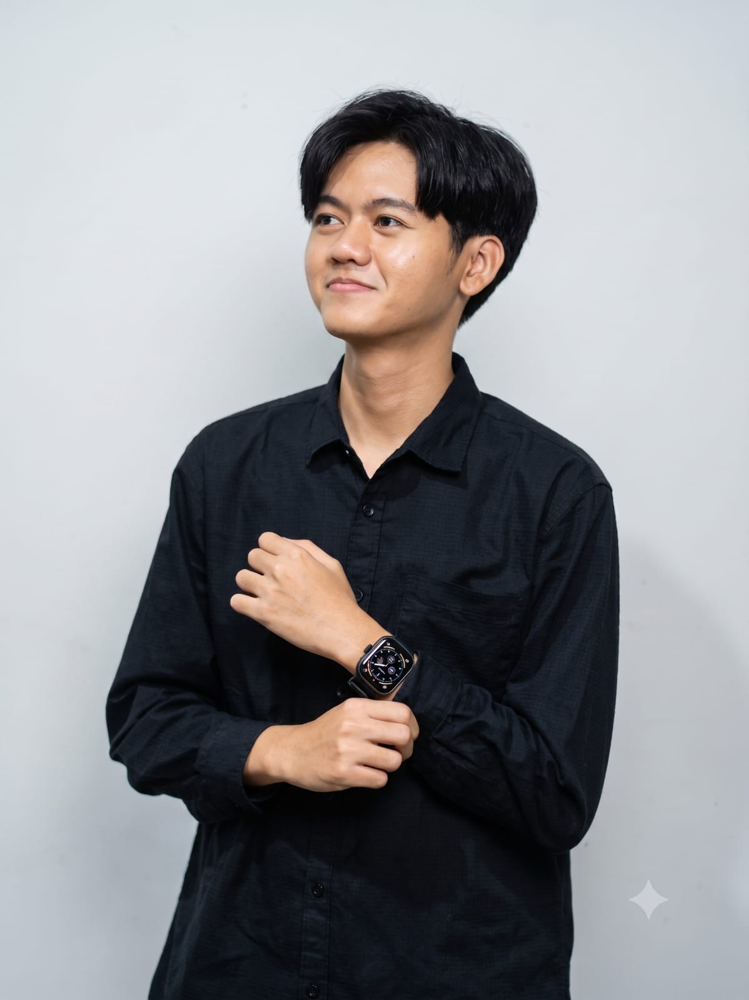

🛡
Jaringan & Cybersecurity
Linux, konfigurasi dan troubleshooting MikroTik, serta mempelajari konsep keamanan jaringan di lingkungan pengujian.
|
Mahasiswa Informatika Universitas Katolik Widya Mandala Surabaya (angkatan 2026) asal Magetan. Tertarik di komputer, jaringan, multimedia, dan pemrograman. Suka belajar hal baru, bekerja sama, dan terus berkembang.

Gabungan teknologi dan pelayanan: dari jaringan sampai produksi acara.
Linux, konfigurasi dan troubleshooting MikroTik, serta mempelajari konsep keamanan jaringan di lingkungan pengujian.
Koordinator multimedia gereja: mengelola visual, audio, dan video untuk ibadah serta acara kerohanian.
Belajar membangun software dan web, dari dasar Visual Basic hingga HTML dan Tailwind CSS.
Lihat pengalaman organisasi, event kerohanian, dan peran saya sebagai koordinator multimedia.